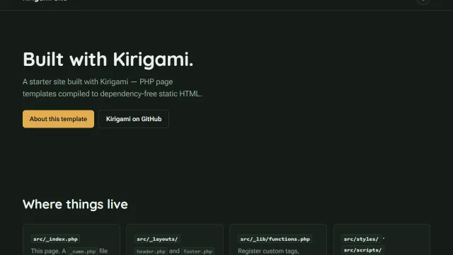
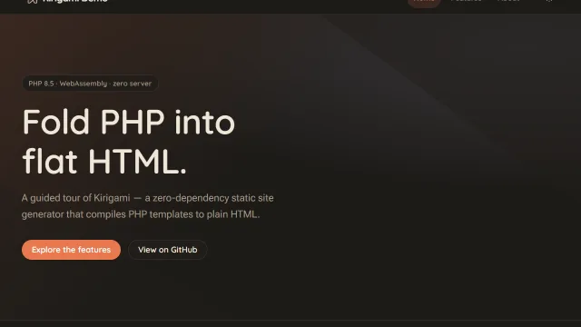

default
The minimal starter: a layout, two pages, a themeable light/dark stylesheet, and a few lines of progressive- enhancement JavaScript. Start here for a real site — there's nothing to strip out first.
Official starting points for `kiri create` — clone one instead of starting from a blank folder.
npx kiri create # interactive: pick a template, name your project
npx kiri create default # or name one directly
npx kiri create --list # see what's available
kiri create clones the template's repo, deep-merges its package.json, writes your answers into kirigami.yaml, then git inits and npm installs for you.

The minimal starter: a layout, two pages, a themeable light/dark stylesheet, and a few lines of progressive- enhancement JavaScript. Start here for a real site — there's nothing to strip out first.

A guided tour of every feature — Markdown, images, code highlighting, data files, tags & hooks, three official plugins — each as a real page with its source alongside. Start here to see what Kirigami can do before committing to a shape for your own site.
Both templates ship a .github/workflows/page.yml wired to kiribuild, our GitHub Action published on the Marketplace — push to main and it deploys to GitHub Pages, no further setup. See Tutorial → Deploy for how that workflow is put together, or Showcase to see both templates live, deployed exactly as cloned.
Each also ships its own CLAUDE.md — a project-specific brief for Claude Code covering where things live and how this exact template is put together, so an AI-assisted session starts oriented instead of guessing from the file tree.